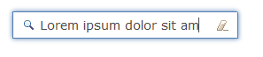
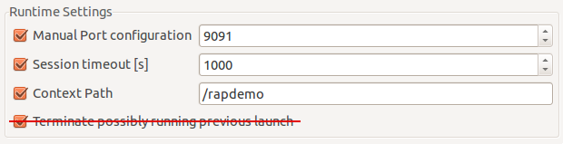

In 1.5 we replaced the communication between server and client with a new, JSON-based format. In 2.0, the client uses the same format to report changes to the server. With this change, the entire communication uses the JSON protocol. No HTTP request parameters are involved anymore. All widgets LCAs have been reworked to handle the new JSON-based message.
The exact format is described in the RAP Protocol wiki page.
Now that alternative clients can be connected to a RAP server, applications will need to distinguish between different clients, e.g. to render parts differently on certain clients.
To support those cases, we added a service provider interface Client that can be acquired using the new method RWT.getClient(). Unless you have a custom client implementation installed, RWT.getClient() will always return an instance of WebClient.
Client implementations can provide client-specific services, which can be obtained using the
method getService( Class
This service can be used to execute a piece of JavaScript code on the client. It replaces the internal class JSExecutor. Example:
JavaScriptExecutor executor = RWT.getClient().getService( JavaScriptExecutor.class ); executor.execute( "alert( \"Hello World!\" );" );
If a custom component requires additional JavaScript code on the client, the JavaScriptLoader can be used to load a JavaScript file just before the component uses it. The JavaScriptLoader will ensure that the file is loaded only once, even if require() is called subsequently.
JavaScriptLoader loader = RWT.getClient().getService( JavaScriptLoader.class ); loader.require( "rwt-resources/myComponent/MyFile.js" );
The ClientInfo service provides additional information about the client that is connected to the current UI session. In this version, the service provides the client's locale and its timezone offset in minutes. Unfortunately, it's not possible to obtain the actual timezone region from the browser.
ClientInfo clientInfo = RWT.getClient().getService( ClientInfo.class ); int timezoneOffset = clientInfo.getTimezoneOffset(); Locale clientLocale = clientInfo.getLocale();
The UrlLauncher service allows to open any URL (websites, files, "mailto", etc.) without influencing or leaving the application. Popup blocker may ask the user for permission before a new window is opened.
UrlLauncher launcher = RWT.getClient().getService( UrlLauncher.class ); launcher.openURL( "http://www.eclipse.org/" ); launcher.openURL( "mailto:someone@nowhere.org" );
Please use this new client service instead of the class ExternalBrowser.
The BrowserNavigation service allows support for the browsers back/forward button and deep linking. It's a complete replacement for the removed BrowserHistory class.
BrowserNavigation navigation = RWT.getClient().getService( BrowserNavigation.class ); navigation.pushState( "main", "Main View" );
Used to configure the confirmation dialog that can be shown before the user leaves the application. It is no longer possible to do this in a branding. Example:
ExitConfirmation confirmation = RWT.getClient().getService( ExitConfirmation.class ); confirmation.setMessage( "Where do you think you're going?!" );
Tree and Table widgets can now be scrolled on mobile devices (iOS and Android) by dragging a row with one finger. However, Tree and Table can only scroll item-by-item, not smooth like the List.
Text widget now have full support for SWT.ICON_SEARCH and SWT.ICON_CANCEL style flags.

The themeablity of some widgets has been improved. The following properties and states have been added:
box-shadow property for DateTime
hover state and text-decoration property for List-Hyperlink
text-decoration property for Button
disabled state for Combo-Button-Icon
The event system in RWT has been completely re-written. For historical reasons, the implementation was based on typed events like SelectionEvent with untyped events built on top. This caused several problems that are now fixed (see ).
This also allowed us to provide some missing API:
All typed events have a time field that reflects the time an event has occurred.
MouseEvent has a field count that allows to distinguish single and double clicks.
Custom widgets can now use the protected method
Widget #removeListener( int, SWTEventListener ).
With the move to RAP 2.0, we are cleaning up our APIs. This will lead to breaking changes. Existing RAP 1.x applications will therefore need minor adjustments to work with RAP 2.0. See the RAP 2.0 Migration Guide for instructions on updating your code to RAP 2.0.
We renamed this package to org.eclipse.rap.rwt in order to comply with Eclipse naming convention that packages should be prefixed with the project that creates it.
This constant has been moved to the class RWT.
The prefix “I” in interface names like IEntryPoint is a heritage from the Eclipse platform. This deviates from the naming pattern used in SWT and other libraries, and also from the Java class library. Since it is not even used consistently in RAP, we're removing the prefix from all interfaces.
The class Graphics had been used to create shared instances of resources like Color and Font before resource constructors were introduced in 1.3. This practice is problematic because instances created using these methods throw an exception when trying to dispose them. Moreover, they cannot be garbage collected. In RAP 2.0, resources should only be created using the constructors of Color, Font, Cursor, and Image.
Graphics also provided methods for test size measurement. We expect that these methods are hardly used by application code and can be replaced by SWT's GC API. To measure a string in a given font, create a GC, set the font, and call the GC methods stringExtent or textExtent. Don't forget to dispose of the GC afterwards.
The service store is used internally by the framework to store data in the scope of a request.
Application developers shouldn't really need this store anymore.
If an application needs to store any information in the request scope, it should use the
request object directly, i.e. RWT.getRequest().setAttribute(...).
When working with RAP, you have to deal with two different types of sessions: the servlet container's HttpSession and RAP's UISession (formerly known as session store). Both sessions have a different scope and a different purpose. In recent projects we've noticed that the relationship between the HTTP session and RAP's “session store” led to confusion. By renaming the session store to UI session we hope to make it more clear that both are sessions with a different scope and meaning. Here's some background:
The HTTP session is managed by the servlet container which recognizes the user with the help of a Cookie or URL rewriting. It has a configurable timeout, after which a user has to sign in again. The HTTP session is the place to store user-specific information.
The UI session is built on top of the HTTP session, but has a shorter lifetime. A new UI session is started every time a user accesses an entrypoint and it lives as long this UI is being used. When the user accesses another entrypoint, this results in a new UISession, but the HttpSession will be the same. The UI session is the place to store information that is related to the current instance of an application's UI. It can now also be used to access UI-session-scoped instances such as the Client and the locale.
The interface ISessionStore has been renamed to UISession. The types SessionStoreListener and SessionStoreEvent have been renamed accordingly.
In addition to the get/setAttribute methods, UISession also provides access
to the Client instance and the Locale.
Actually, RWT.getClient() is now a shortcut for
RWT.getUISession().getClient().
The same is true for RWT.getLocale() and RWT.setLocale( locale ).
BrowserHistory and related classes do not exist anymore.
It was reworked into the BrowserNavigation client service, but retains all features of
BrowerHistory.
The new ApplicationContext represents the running instance of a RAP application, it is shared by all UI sessions. This interface replaces IApplicationStore, it can be used to store shared data, and also to obtain application-scoped services such as the resource manager.
Just like the UISession is built on the servlet container's HttpSession, the ApplicationContext is built on the ServletContext, and its life cycle is also bound to lifetime of the servlet context. We chose the name ApplicationContext to highlight this analogy.
The interface IApplicationStore has been renamed to ApplicationContext.
An instance can be acquired from RWT.getApplicationContext() which replaces
the old method RWT.getApplicationStore().
In addition to the get/setAttribute methods, ApplicationContext has accessor
methods for the resource manager and the service manager.
Actually, RWT.getResourceManager() is now simply a shortcut for
RWT.getApplicationContext().getResourceManager().
The interface ServiceHandler has been changed. The service method now provides two parameters request and response to the implementation. Developers don't have to obtain the request and response objects from static methods anymore.
The ServiceManager has got a new method getServiceHandlerUrl( String ). Developers should use this new method to obtain the URL to access a service handler instead of assembling the URL manually.
The resource manager (IResourceManager) is used to register static resources like images or JavaScript files in RAP applications. We reduced its interface to this purpose and simplified the implementation.
Moreover, the resource manager does not close input streams anymore after registering a resource, as it did in 1.5 (). Double check that you're closing your input streams correctly.
Until now, entrypoints could be registered with a name in an entrypoint extension.
Those entrypoints had been available at a URL with the default servlet name “rap” and a URL
parameter “startup” pointing to this name. This approach had a number of drawbacks, thus we
decided to remove the support for it completely in RAP 2.0. Now
entrypoints can only be registered by path, which was introduced in RAP 1.5.
For example, an entrypoint that is registered with the path /foo will be available
at:
http://hostname/webapp/foo
Since entrypoints are now always registered by path, there is no need for an entrypoint-to-path mapping in a branding anymore. Therefore, we removed the attributes servletName, defaultEntrypointId, and the element associatedEntrypoints from the branding extension point. A branding can now be bound to an entrypoint by setting the new attribute brandingId.
<extension point="org.eclipse.rap.ui.entrypoint">
<entrypoint id="example.entrypoint"
class="example.MyEntryPoint"
path="/example"
brandingId="example.branding" />
</entrypoint>
</extension>
For exit confirmations, the new client service ExitConfirmation should be used as explained above. The attribute exitConfirmationClass is no longer supported by the branding extension point.
With these changes, we also removed the branding API from RWT, namely the classes AbstractBranding and Header. We don't expect that anyone was using these classes. In plain RWT applications, entrypoint properties can be used for branding.
If you use the interface IApplication as entrypoint to your application, you now have to add an entrypoint extension to your plugin.xml in order to bind the application to a path. To do so, create a new entrypoint extension and, instead of providing an EntryPoint class, specify the id of the application extension in the new parameter applicationId:
<extension point="org.eclipse.rap.ui.entrypoint">
<entrypoint id="example.application.entrypoint"
path="/example"
brandingId="example.branding"
applicationId="example.application" />
</entrypoint>
</extension>
During development, it's recommended to start RAP in development mode. In this mode, the JavaScript for the web client is not compressed and potential client-side errors will not be caught. This new setting replaces the old clientLibraryVersion, which has been used for this purpose before. In the RAP Launcher, you'll find a new option to enable the development mode:

In OSGi launch configurations, please replace the VM parameter
-Dorg.eclipse.rwt.clientLibraryVersion=DEBUG with
-Dorg.eclipse.rap.rwt.developmentMode=true.
The RAP launcher has an option to terminate an already running application before starting a new one. This turned out to be a valuable feature, particularly when working with fixed ports. We couldn't find a good reason to ever disable this functionality, so we decided to remove the option from the launcher while keeping the default behavior.
